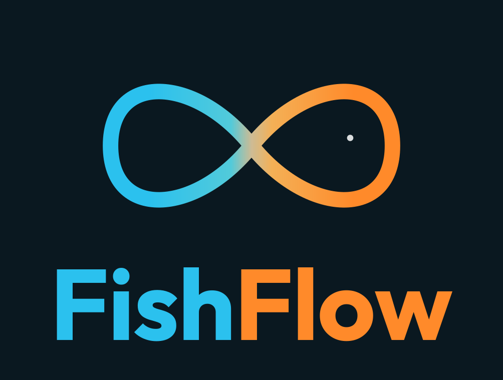

Brand Guidelines · v1 · 2026
Tidal Geometry.
A field manual for the FishFlow visual system. Restraint as discipline. Two colors, never three. The fish is a whisper, never a shout.

Brand Guidelines · v1 · 2026
A field manual for the FishFlow visual system. Restraint as discipline. Two colors, never three. The fish is a whisper, never a shout.
The FishFlow mark is a lemniscate drawn as one continuous path with diagonal tangents at the cross. To the casual eye it reads as infinity. To the careful eye, the right lobe holds the suggestion of a tail and the eye that completes the fish. Both readings are correct. Both are intended.

Vertical for hero moments — covers, pitch decks, posters. Horizontal for headers, footers, email signatures. Vertical dark when the surface is dark and the brand has center stage.

Tide Cyan recalls oxygenated water and dashboards at dawn. Tide Orange carries the pulse of living tissue. They meet at the cross of the lemniscate the way a tide meets a shore: inevitable, soft, exact. The orange never dominates. The blue never overwhelms.
FishFlow
A junior employee that never sleeps.
Inter handles every paragraph in the brand. It is calm, neutral, and deeply readable at small sizes — exactly what the bakery, the clinic and the workshop need on an invoice or a one-pager.
— FF-2026-0142 · ISSUED 04 MAY 2026 · DUE 03 JUN 2026
FishFlow speaks like Rafa speaks: directly, with specifics, naming the bakery by name. We don't say "SMBs" — we say "the bakery, the clinic, the workshop." We don't say "increased efficiency" — we say "fourteen hours a week back." We earn trust by being concrete.
"A junior employee that never sleeps."
"The bakery doesn't need a CRM. It needs its evenings back."
"Two weeks. One inbox. Free."
"If your accountant can't use it, it isn't shipped."
"Leverage AI to streamline your operational workflow."
"Best-in-class enterprise-grade automation suite."
"Unlock unprecedented productivity gains."
"Synergize across verticals with frictionless onboarding."
Every pixel is interrogated. Every curve is the result of countless quiet adjustments. The wordmark is geometric, with rounded terminals — friendly without surrendering rigor. Fish in cool, Flow in warm: a chromatic pun delivered without comment. Held against the work of the world's best studios, the FishFlow mark must not flinch.
This document is v1.0. The brand is young. If you're using FishFlow assets in a context this guide doesn't cover, write to rafaelnolasco@gmail.com before improvising. We'd rather answer one email than fix a printed brochure.